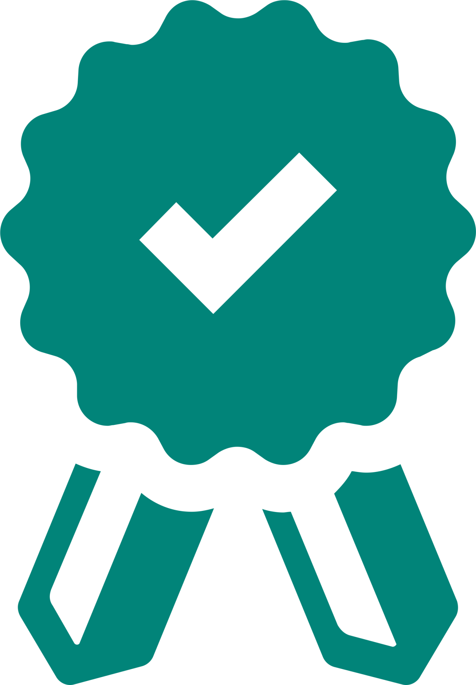
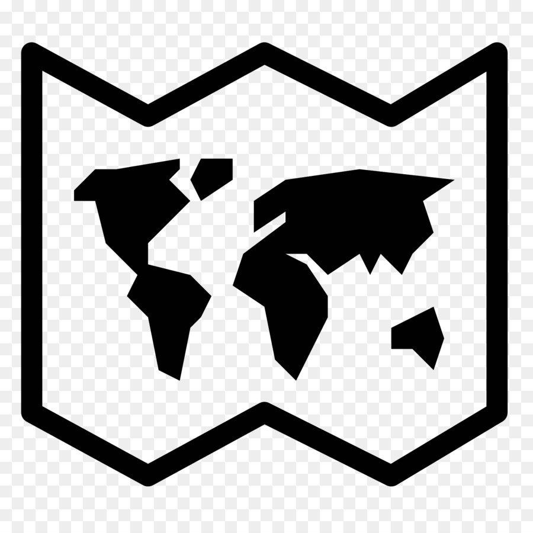

Доверьтесь специалистам IBM по обеспечению устойчивости,проверенным временем методологиям и передовым облачным возможностям для обеспечения бесперебойного выполнения бизнес-операций и повышения уровня устойчивости.

100 % успешности в оказании помощи клиентам, сообщившим об аварийной ситуации
Более 50 лет в области обеспечения бесперебойной работы предприятий и восстановления после аварий

Более 6000 специалистов по обеспечению устойчивости, работу которых поддерживают более 400000 сотрудников и бизнес-партнеров IBM

Более 330 центров по обеспечению устойчивости в 68 странах мира